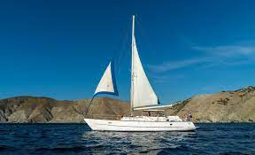

Travesera de Gracia 89, Ciudad Autónoma de Buenos Aires, Argentina
Los días feriados no trabajamos
Sistema Solar
Los Planetas
La Tierra
La Tierra es redonda

| Nombre | Apellido | Nota |
| Carlos | Rodriguez | 6 |
| Aldo | Sanchez | 8 |
| Pesqueros | De recreo | De carga | |
| Clases | Crucero de pesca  |
Velero  | Buque de carga general  |
| Catamarán | Yate | Buque Portacontenedor | |
| Barco cabinado pequeño | Lancha | Buque Granelero | |
| Otros tipos de barcos | |||
|
|||